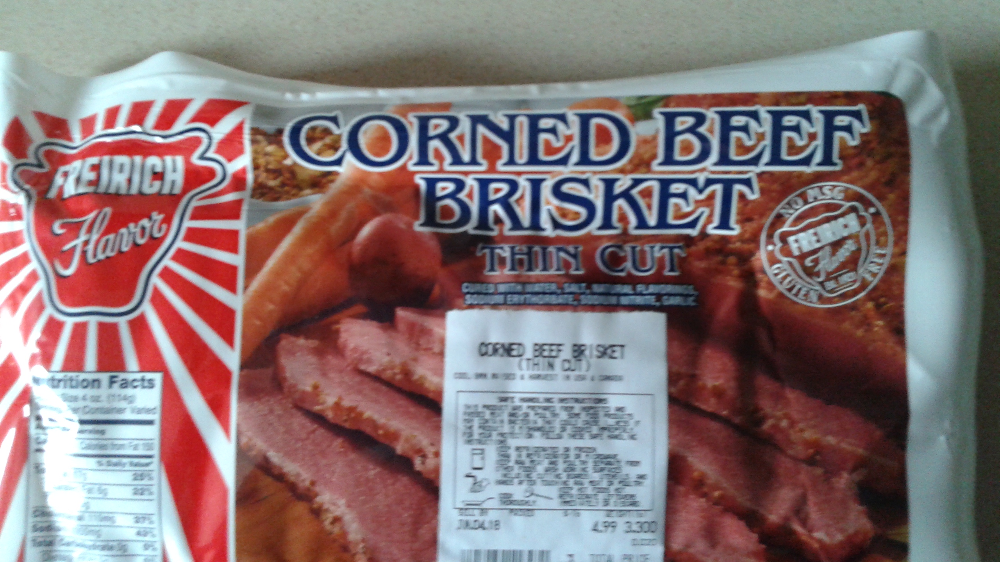

This was my father's recipe. I always make this on St. Patrick's Day! I have carried on the tradition of making it every year.
Start with buying Freirich Thin Cut Corned Beef.

Put the meat in a large pot and bring to a boil, then simmer for 2 hours. During the last 45 minutes add potatoes and quartered cabbages.